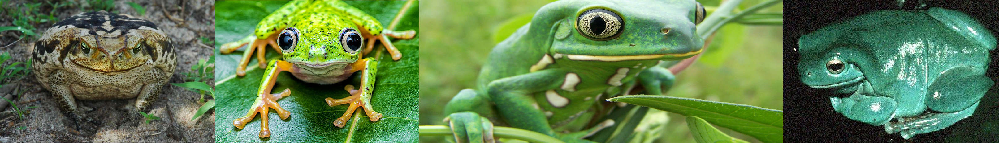

Nossa Missão
Missão Primária
-
O nosso grupo tem o intuito de preservar os fragmentos da Mata Atlântica do nordeste brasileiro.
Missão Secundária
- Estudar a fauna de anfíbios anuros dos fragmentos da Mata Atlântica.
- Aproximar os leigos da natureza através do conhecimento.
- Realizar palestras com o enfoque na conservação do meio ambiente.
- Fazer levantamento de flora e fauna para estudos de impacto ambiental (EIA) e relatórios de impacto ambiental (RIMA)